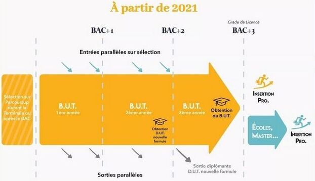
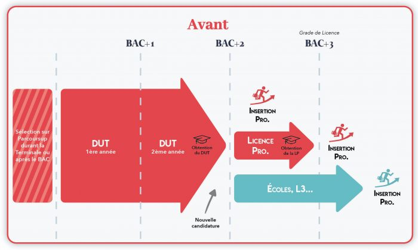

Les IUT,Institut Universitaire Technologique, sont des établissements rattachés à une université qui délivre des formations post-bac. Ici, les IUT sont reliés à l'académie de Aix-Marseille Université et proposent jusqu'à 23 départements de formation différent répartie dans plusieurs villes, à savoir:
Ces IUT délivrent donc beaucoup de formation différentes car certains IUT proposent également des licences professionnelles en plus. Ainsi, tous les IUT compris dans l'académie Aix-Marseille Université comportent environ 5500 étudiants
 Le BUT qui est une formation en 3ans est le remplaçant du DUT qui était une formation de deux ans. A la fin d'un DUT on avait plusieurs choix, s'insérer professionnellement, faire une poursuite d'étude vers des écoles ou une L3 pour ensuite si'insérer ou enfin faire une licence rofessionnelle et enfin s'insérer professionnellement. Tout comme le DUT, la licence professionnelle va disparaitre car elle est remplacé par la 3e année en BUT.
Le BUT quand a lui est comme dit précédemment une formation de 3 ans qui facilite la poursuite notamment en retirant la licence professionnelleet en la généralisant en une 3e année. Cependant, il est toujours possible de quitter le BUT en 2e année afin d'intégrer une école d'ingénieur par exemple.
En ce qui concerne les cours, ils sont organisés en 3 catégories. Il y a les cours magistraux (CM) qui se font avec toute la promotion, les travaux dirigiés (TD) qui se font avec une trentaine d'étudiants maximum et enfin les travaux pratiques (TP) avec une quizaine d'étudiants. En plus des ressources,c'est à dire des cours, il y a aussi les SAE qui sont des travaux de groupes qui durent quelques semaines et qui combinent généralement deux ou trois ressources.